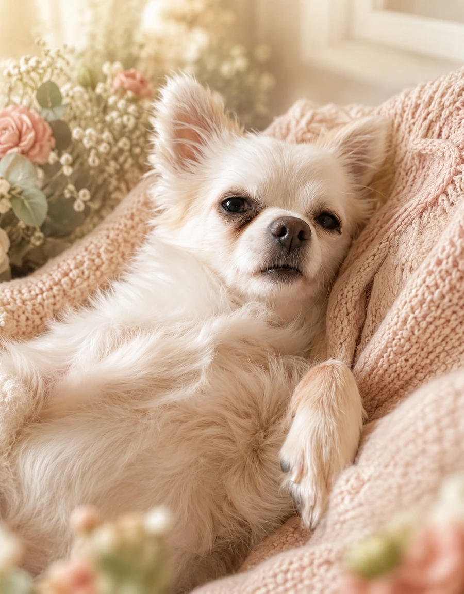
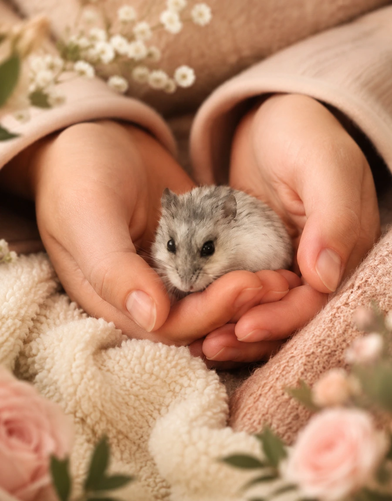

Маленькие хранители уюта
Дом, где живут зайчики
У каждой семьи есть свои сокровища. У нас — целая коллекция ушастых созданий, каждое со своим характером, историей и именем.
Здесь зайчики — не свадебный декор, а настоящий символ нашего дома.
История коллекции
У каждого дома есть душа
Она складывается из мелочей, которые мы любим и бережём.
В доме невесты живут деревянные, керамические, вязаные, стеклянные, серьёзные и смешные зайчики. Некоторые появились здесь много лет назад, другие поселились совсем недавно.
Каждый из них хранит маленькую историю. Один напоминает о поездке, другой — о подарившем его человеке, третий однажды оказался на полке и стал родным.
Поэтому на нашей свадьбе зайчики станут не просто украшением, а символом новой семьи — тёплой, уютной и по-настоящему счастливой.
Знакомьтесь с пушистыми членами семьи
Те, кто сопит, шуршит и иногда «висит на заборе»
В день праздника рядом с нами будут наши самые любимые друзья. Они уже готовятся стать звёздами ваших фотографий.

Компанейский малыш
Микуша
В семейном кругу — «Арбуз»
Микуша — настоящий компанейский малыш: любопытный, живой и всегда готов первым познакомиться с гостями.
Он любит быть рядом, внимательно наблюдать за происходящим и моментально становится частью любого разговора.

Нежный хвостик
Умчик
«Умка», «Пятачини» и «Мелкий»
Полная противоположность брату. Умка очень спокойный, нежный и ходит за всеми хвостиком.
Его особенность — вечно крутиться под ногами и попадать в самые неловкие ситуации.
Перед каждым шагом убедитесь, что рядом нет Умки. Скорее всего, он уже стоит прямо за вами.

Хрупкая красавица
Валюша
Папа называет её «Валенком»
Валюша — джунгарский хомячок с большим сердцем: аккуратная, хозяйственная и очень любопытная.
Она наблюдает за происходящим из домика, а если ей что-то интересно, смело выходит «в свет».
Среди шумных собак Валюша выбирает тишину и уют, но может стать самой фотогеничной гостьей вечера.
Семейный фотоальбом
Три характера одного дома
Нажмите на карточку — откроется крупный портрет нашего маленького героя.
То, что особенно дорого
Для нас вы не просто гости
Вы — часть нашей семьи и нашей истории.
Всё, о чём мы рассказали, — это тепло и традиции дома моих родителей, частью которого стала и наша новая семья.
Спасибо им за уют и заботу.